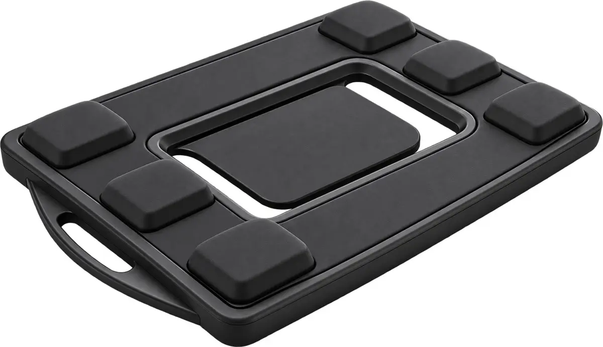
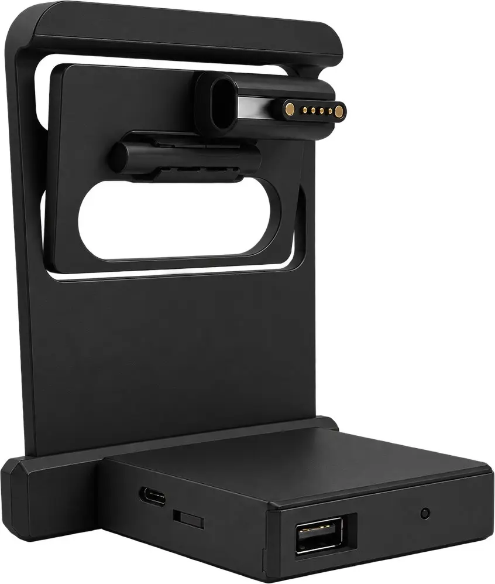
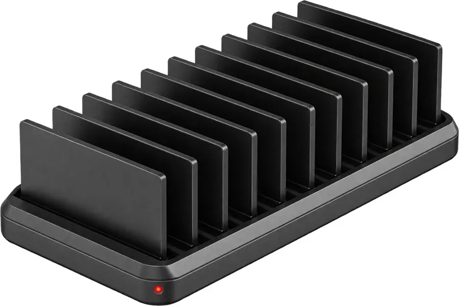
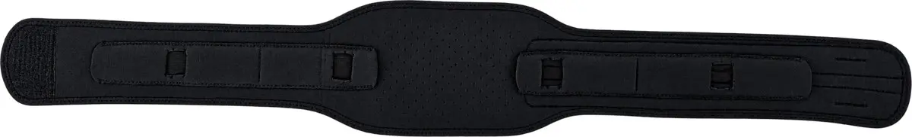
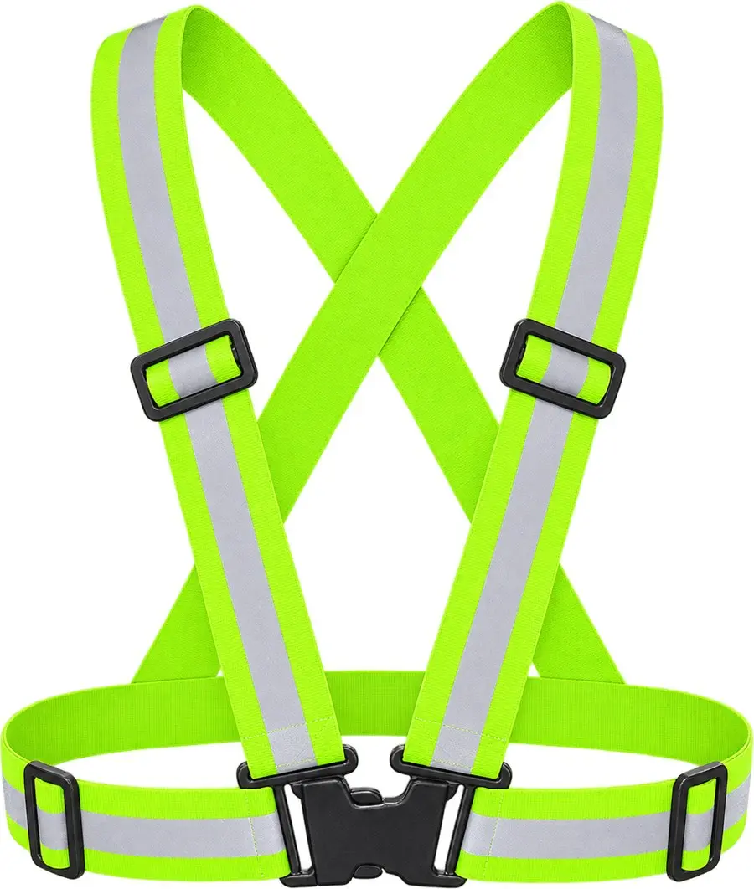
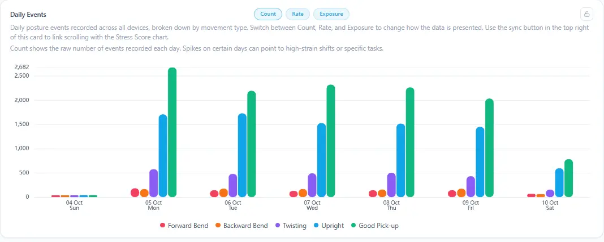
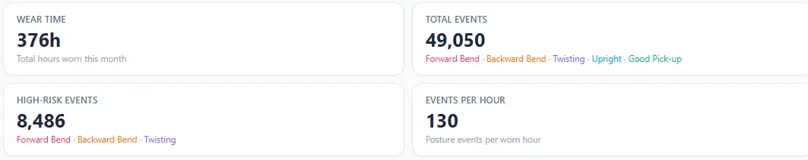

01 / WEARABLE
Backy unit
Pressure sensing, posture classification and vibration feedback in a clip-on form.
Backy is a lower-back wearable that senses posture and movement, gives haptic feedback during work and turns shift data into actionable safety insights.

A wearable, charging options and attachments designed to fit into the way teams already work.

Pressure sensing, posture classification and vibration feedback in a clip-on form.

Charges and syncs a set of devices for team use.

Central charging and automatic syncing for multi-device deployments.


Accessories and pilot kit configuration are selected with the deployment team.
Pricing follows the product introduction. Volume pricing and custom configurations are available on request.
Pressure-sensing wearable with belt and magnetic charging cable.
Start with worker feedback and an individual view.
Team insight for ongoing workplace deployments.
Docks and accessories are quoted separately. The dock is provided for pilots. The Smart Dock is recommended for automatic syncing. All prices are in USD; volume pricing and custom quotes on request.
Specifications below follow the product details previously published on backy.ai. Confirm fit and configuration with TacnIQ.ai before ordering, as kit versions may differ.

Demo kit data handling
The demo kit is intended for evaluation. The previously published Backy page states that end-to-end encryption is disabled for demo kits and demo data should be treated as non-sensitive. Confirm current security controls and the data-handling plan with TacnIQ.ai before a workplace deployment.
Backy software brings the worker feedback loop together with a view of ergonomic patterns for safety teams. View software pricing ↓


Dashboard images from the TacnIQ.ai product introduction.
A positive programme concept from the introduction deck: use each worker’s baseline, celebrate safer habits and keep personal posture scores private.
Sample team progress · 18% fewer high-risk postures
See how Backy clips on, calibrates and gives a movement cue.
Tell us about the work, the number of people and the safety question you want to answer.